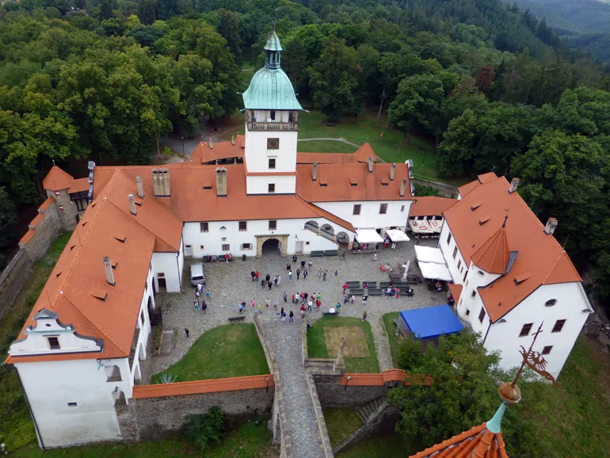
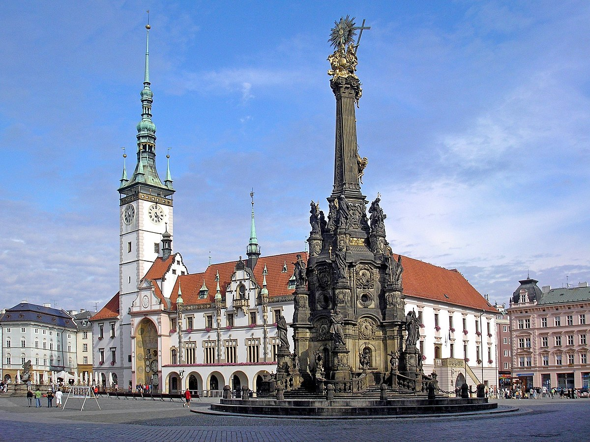

La Región de Olomouc es una subdivisión de la República Checa, que antiguamente formó parte de la región histórica de Moravia, salvo una pequeña parte de Silesia. La capital es Olomouc.
Vista del castillo de Bouzov
Olomouc siempre perteneció a los lugares más importantes del Reino Checo. Gracias a su favorable ubicación, antigua universidad, tradiciones eclesiásticas y culturales fue durante siglos un natural centro de Moravia.
Olomouc - Horní náměstí
El monumento más importante de Olomouc es la Columna de la Santísima Trinidad , situada en la Plaza Alta. Se trata de la agrupación de esculturas barrocas más grande de Europa Central. Desde la cercana torre del ayuntamiento, ganará buenas vistas panorámicas y desde uno de los tantos cafés locales podrá observar su extraordinaria belleza.